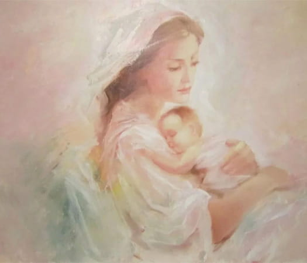

Научно-практическая конференция «Сложное целое: мать и дитя.
Врожденные пороки развития
головного и спинного мозга»

Место проведения: Конференц-зал «Ока ЛЮКС» конгресс-центра «Ока Премиум» гранд-отеля «Ока» (г. Нижний Новгород, пр. Гагарина, 27) с трансляцией на специализированном online-сервисе для проведения конференций zoom.us
Начало в 9.00. Регистрация участников с 8.00 (время Московское)
Организаторы:
- Министерство здравоохранения Нижегородской области
- Приволжский исследовательский медицинский университет
- Нижегородское региональное отделение Россиийского общества неонатологов
- НРОО «Ассоциация организаторов здравоохранения»
Оргкомитет:
- Козлова Елена Михайловна, д.м.н., главный внештатный специалист неонатолог Министерства
здравоохранения Нижегородской области, декан педиатрического факультета, профессор кафедры факультетской
и поликлинической педиатрии ПИМУ, Н. Новгород ‒
руководитель программного комитета.
Тел. 8-906-358-37-48, e-mail: pediatrnn@list.ru. - Каткова Надежда Юрьевна, д.м.н., доцент, зав. кафедрой акушерства и гинекологии ФДПО ПИМУ, Н. Новгород.
- Новопольцева Екатерина Геннадьевна, д.м.н., доцент, председатель Нижегородского регионального отделения Российского общества неонатологов, зав. кафедрой факультетской и поликлинической педиатрии ПИМУ, Н. Новгород.
- Карякин Николай Николаевич, д.м.н., доцент, председатель правления Ассоциации специалистов по 3Д печати в медицине, ректор ПИМУ, Н. Новгород.
- Военнов Олег Вячеславович, д.м.н., доцент, зав. кафедрой анестезиологии, реаниматологии и трансфузиологии ПИМУ, Н. Новгород.
- Земляникин Виктор Васильевич, к.м.н., главный внештатный детский специалист нейрохирург Министерства здравоохранения Нижегородской области, зав. нейрохирургическим отделением ГБУЗ НО «Нижегородская областная детская клиническая больница», Н. Новгород.
- Карпович Екатерина Ильинична, д.м.н., главный внештатный детский специалист невролог Министерства здравоохранения Нижегородской области зав. отделом нейрофизиологии Консультативно-диагностического центра ГБУЗ НО «Нижегородская областная детская клиническая больница», Н. Новгород.
Основные направления работы конференции:
- Прегравидарная и антенатальная профилактика врожденных пороков развития (ВПР) головного и спинного мозга.
- Антенатальная диагностика ВПР головного и спинного мозга.
- Тактика акушера-гинеколога при выявлении ВПР.
- Тактика врача-неонатолога при выявлении ВПР головного и спинного мозга.
- Неонатальная неврология, последствия и реабилитация перинатальных поражений ЦНС у детей.
- Нейрохирургическая коррекция врожденных пороков развития ЦНС и позвоночника.
- Послеоперационное ведение детей с ВПР головного и спинного мозга.
- Анестезиологическое сопровождение нейрохирургических операций.
- Медикаментозное лечение детей с ВПР головного и спинного мозга.
- Реабилитация детей с ВПР головного и спинного мозга.
- Гидроцефалия (шунтирование, медикаментозное лечение).
- Эпилепсия у детей с ВПР.
- Тазовые расстройства у детей с ВПР спинного мозга.
- Диспансерное наблюдение детей с ВПР.
- Особенности паллиативной помощи.
- Особенности питания детей с ВПР.
- Вакцинация детей с патологией головного и спинного мозга.
Дополнительная техническая информация
Документация по учебному мероприятию представлена в Комиссию по оценке учебных мероприятий и материалов для НМО.
К участию в конференции приглашаются врачи акушеры-гинекологи, анестезиологи-реаниматологи, неонатологи, педиатры, детские хирурги, нейрохирурги, неврологи, врачи ультразвуковой диагностики, ЛФК и другие заинтересованные специалисты.
Участие специалистов бесплатное.
Для участия в мероприятии необходима предварительная регистрация на странице мероприятия или регистрация на стойке перед мероприятием.
Контроль присутствия очных участников: каждый пришедший
участник при регистрации получает талон с номером, по которому будет контролироваться время входа
и выхода слушателей из зала.
По отсутствующим номерам талонов идентифицируются участники, не вернувшиеся в зал, и представители
организатора исключают фамилии данных слушателей из списка участников мероприятия.
Выдача Свидетельств осуществляется после окончания мероприятия по предъявлению регистрационного талона.
Для получения Свидетельства необходимо прослушать 315 минут.
Вниманию онлайн-участников!
- Для участия в мероприятии необходимо скачать и установить приложение ZOOM. Приложение поддерживается любым устройством (персональный компьютер, ноутбук, планшет, смартфон) и совместимо с любой операционной системой, также возможна работа напрямую через браузер.
- Для просмотра трансляции с возможностью получения баллов НМО — предварительная регистрация обязательна.
- Непосредственно перед началом видеоконференции участники, прошедшие предварительную регистрацию, получают уникальную ссылку для входа в конференц-комнату за 1 день до мероприятия и за 30 минут в день мероприятия.
- В день мероприятия войдите в приложение, введите идентификатор, подождите, когда организатор подтвердит вашу заявку, и начните просмотр.
- Время присутствия контролируется по автоматическому отчету, генерируемому порталом трансляции.
Контроль присутствия на мероприятии осуществляется путем нажатия слушателем на «всплывающее окно». Периодичность проверки присутствия происходит с разными временными промежутками. Интервал времени подтверждения присутствия участником составляет 3 минуты. Задержка с подтверждением более 3 минут будет считаться как «отсутствие» обучающегося (для участников НМО) на трансляции.
Минимально допустимое время присутствия ‒ 315 минут.
Количество контролей ‒ 7.
Количество подтверждений ‒ минимум 5.